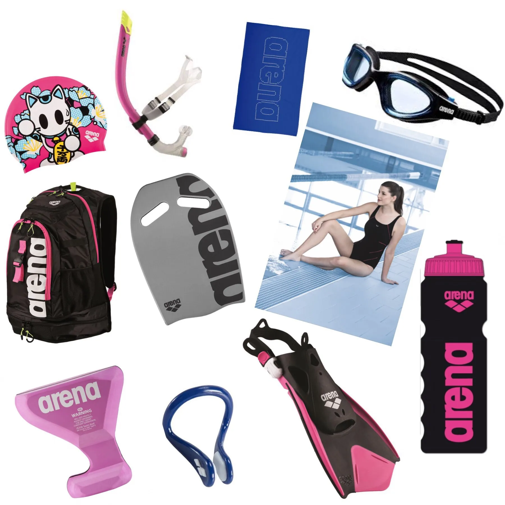

Je veux te partager ma passion : je vais t'apprendre comment (bien) nager.
#apprenons étape par étape
commencer
1. Le matériel...
En natation, il est essentiel de s'équiper.👙🥽
Vous pouvez utilser des accessoires pour vous aider votre apprentissage, vous affiner ou muscler.
Vous allez les adorer ! En quelques mois, vous ne pourrez plus vous en passer et ce, même avec un niveau débutant !
...en images :

Je t'invite à cliquer sur le boutton ci-dessous si tu veux connaitre l'utilisation de chacun de ces objets.
explorer
2. Les nages conventionnelles
1. La brasse
La brasse coulée est la nage la plus lente mais aussi la plus technique de la natation. C'est généralement la nage enseignée en premier dans les écoles de natation. Malgré une technique difficile la brasse coulée est la nage la plus pratiqué par les nageurs loisirs. C'est la nage ludique par excellence mais la plus compliqué à apprendre.
Pour devenir un pro de la brasse, il faut :
- Améliorer sa brasse avec un ciseau puissant.
- Aller plus vite en brasse coulée en travaillant la glisse.
- Réduire le mouvement de vos jambes pour être plus efficace.
- Faire des bras de brasse plus larges.
- Travailler la position de votre corps dans l’eau.
- Réduire le nombre de mouvements pour favoriser le glissé.
✨Ses bienfaits✨
- Réduit le stress et augmente la confiance en soi.
- Augmente l'endurance cardio-respiratoire.
- C'est une nage douce pour les articulations.
- Favorise la souplesse.
2. Le crawl
Le crawl est sans doute la technique de nage la plus connue. Souvent, il est enseigné aux débutants en même temps que la brasse. Le crawl est une nage libre et surtout, c’est la nage la plus rapide.
Pour bien nager le crawl, il est nécessaire de maîtiser les points suivants :
- S’allonger au maximum dans l’eau et de savoir se déplacer sur le ventre pour ensuite apprendre le mouvement des bras.
- Isoler les mouvements de bras pour bien les maîtriser car ils assurent la propulsion du nageur vers l’avant.
- Coordonner la respiration avec les mouvements de bras.
- Coordonner les mouvements des pieds et des bras.
✨Ses bienfaits✨
- Améliore l'endurance.
- Améliore la souplesse.
- Améliore la vélocité.
- Augmmente la force et la masse musculaire.
3. Le dos crawlé
L'équilibre dorsal est la première chose qu'il faut travailler quand on débute sur le dos.
Voici les 3 critères importants pour travailler son équilibre sur le dos:
- Regarder le plafond
- Mettre ses oreilles dans l'eau
- Serrer légèrement les fesses et les abdominaux
✨Ses bienfaits✨
- Idéal pour se muscler, cette nage va permettre un affinement de la silhouette car tu vas travailler tous les muscles de la coiffe des rotateurs (au niveau des épaules) ainsi que les bras, les cuisses, les abdos et les fessiers.
- C’est une nage douce qui n’agresse pas le corps.
- Facile à apprendre, les enfants l'apprennent en une séance.
4. Le pap'
Nage toujours impressionnante et qui démontre une certaine habilité du nageur, le papillon est une nage abordable pour la musculature d’un nageur confirmé, pas forcément expert en natation.
Une bonne maîtrise de cette nage passe par la maîtrise de :
- L'ondulation.
- La poussée.
- La respiration.
✨Ses bienfaits✨
- Améliore la capacité cardio-respiratoire.
- Développement de la musculature.
J'espère t'avoir été utile !
Tu peux désormais répondre à quelques questions grâce au lien ci-dessous.
🌊🐟🥽🌊🐟🥽🌊🐟🥽🌊🐟
aide moi à te connaitre